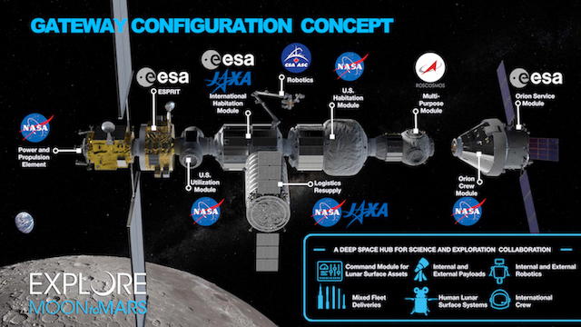
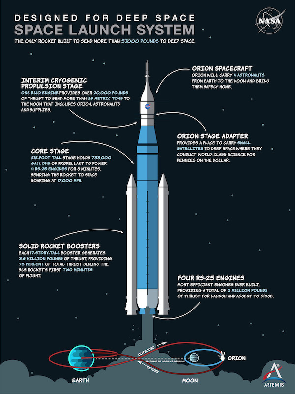
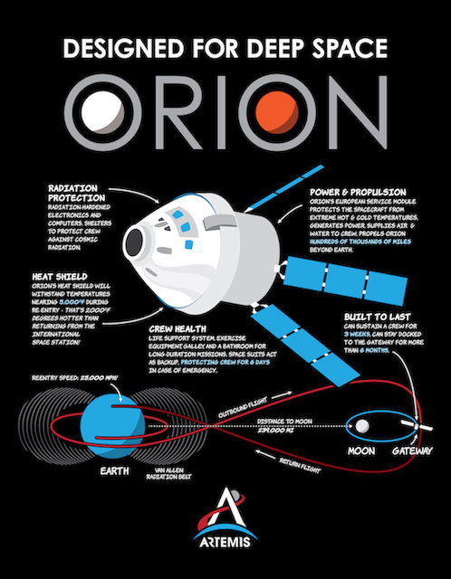
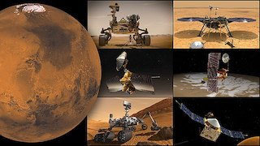
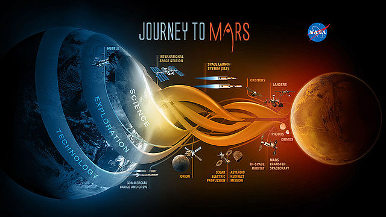
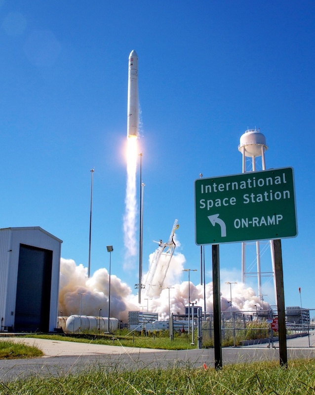

Nasa
The Artemis program is a United States-led international human spaceflight program.
Its primary goal is to return humans to the Moon, specifically the lunar south pole, by 2025
Its stated short-term goal is landing the first woman on the Moon; mid-term objectives include
establishing an international expedition team and a sustainable human presence on the Moon.
Long-term objectives are laying the foundations for the extraction of lunar resources, and eventually,
make crewed missions to Mars and beyond feasible.

“We will build an Artemis Base Camp on the surface and the Gateway in lunar orbit."
Artemis support programs
Commercial Lunar Payload Service

Space Launch System

Orion Spacecraft

Nasa
Mars Exploration Program (MEP) is a long-term effort by Nasa to explorer the planet mars. The planned Orion spacecraft
would be used to send a human expedition to Earth’s moon by 2020 as a stepping stone to a Mars expedition.

SpaceX Mars plans
The long-term goal of the private corporation SpaceX is the establishment of routine flights to Mars to enable colonisation.
For this, the company is developing Starship, a spacecraft capable of crew transportation to Mars. The company will also use the
Super Heavy reusable rocket. In 2017 SpaceX announced plans to send two uncrewed Starships to Mars by 2022, followed by two more uncrewed
flights and two crewed flights in 2024.
Starship is planned to have a payload of at least 100 tonnes.Starship is designed to use a combination of aerobraking and propulsive descent,
utilizing fuel produced from a Mars (in situ resource utilization) facility. As of mid 2021, the Starship development program has seen successful
testing of several Starship prototypes.

Nasa wants to help establish a space based-economy
Space-based economy is economic activity in outer space, including asteroid mining, space manufacturing, space trade, construction
performed in space such as the building of space stations, space burial, and space advertising. Space-based industrial efforts are
presently in their infancy.
Most such concepts would require a considerable long-term human presence in space and relatively
low-cost access to space. The majority of proposals would also require technological or engineering developments in areas
such as robotics, solar energy, and life support systems.
New insights from companies in the growing space economy are helping NASA chart a course for the future of commercial human
spaceflight in low-Earth orbit. Input the companies provided to NASA as part of the studies will inform NASA’s future
policies to support commercial activities that enable a robust low-Earth orbit economy.
NASA selected the following companies to complete studies about the commercialization of low-Earth orbit and the
International Space Station, assessing the potential growth of a low-Earth orbit economy and how to best stimulate private demand for commercial human spaceflight.
- Axiom Space, Inc. of Houston
- Origin, LLC, of Kent, Washington
- Boeing Company of Houston
- Deloitte Consulting of Manhattan Beach, California
- KBRWyle of Houston
- Martin Corporation of Littleton, Colorado

Private space companies are building reusable rockets
During the 21st century, commercial interest in reusable launch systems has grown considerably, with several active launchers.
SpaceX CEO Elon Musk has said that if one can figure out how to reuse rockets like airplanes then the cost of access to space will
be reduced by as much as a factor of a hundred. SpaceX’s Falcon 9 rocket has a reusable first stage and capsule (for Dragon flights)
with an expendable second stage.

SpaceX has been developing a reusable second stage since the late 2010s which, if successful,
could make possible the first fully-reusable orbital launch vehicle during the 2020s. Virgin Galactic has flown reusable suborbital
space plane, and the suborbital Blue Origin New Shepard rocket has a recoverable boost stage and passenger capsule.